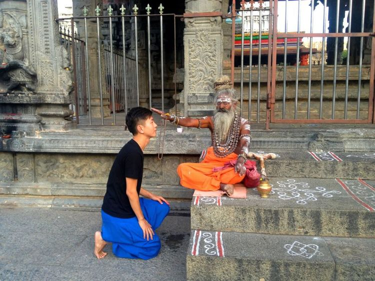
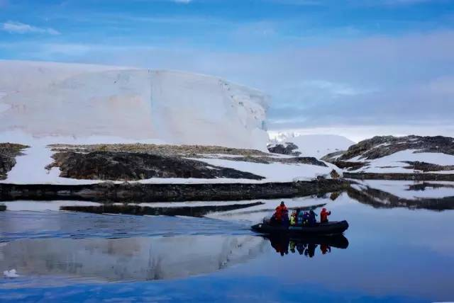
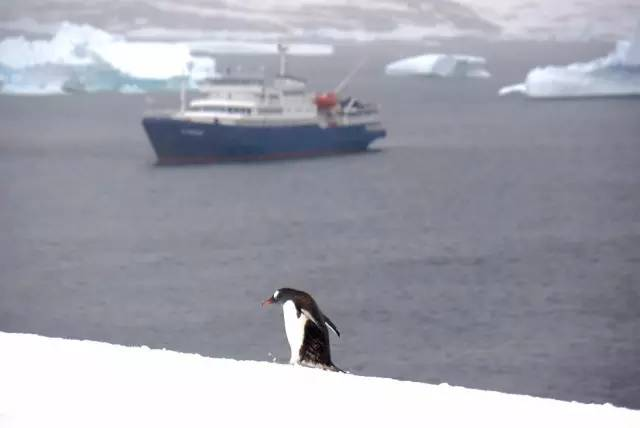
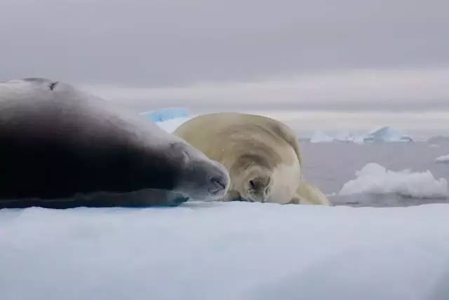
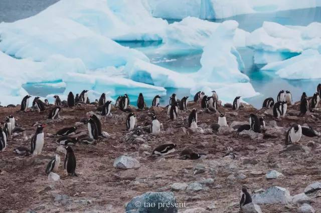
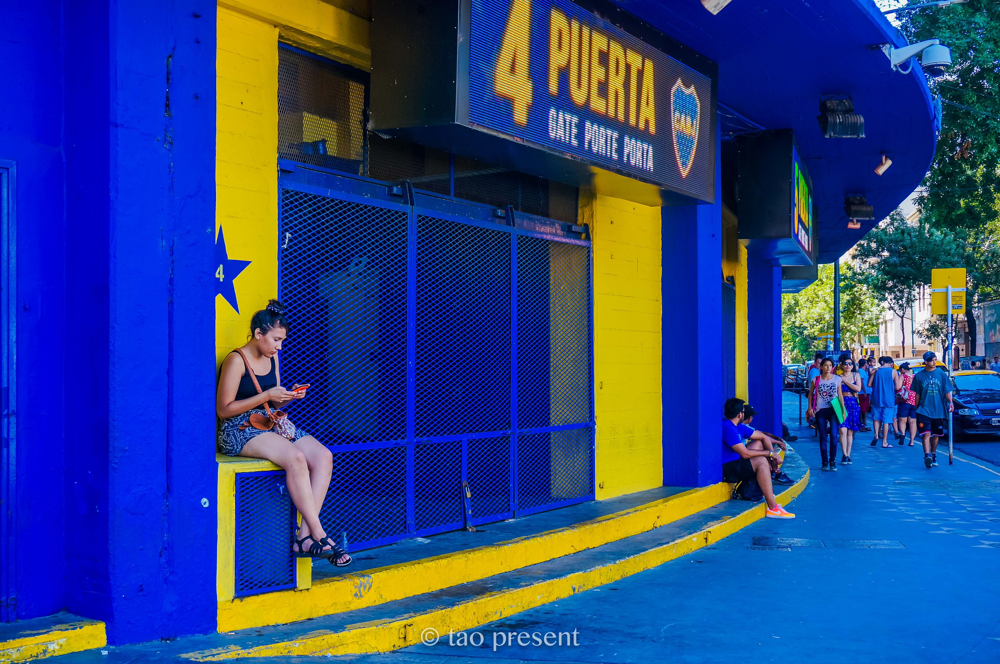
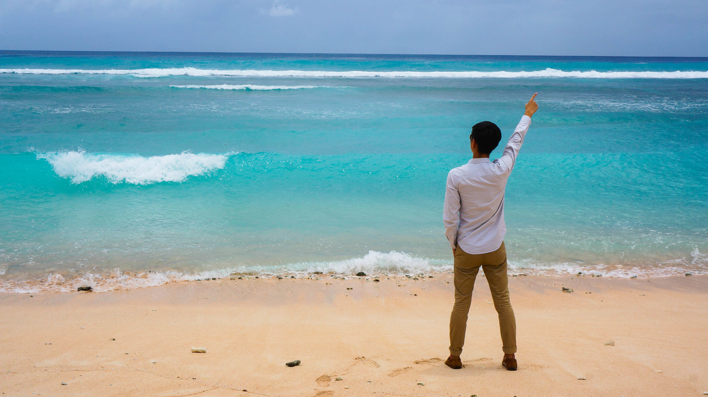
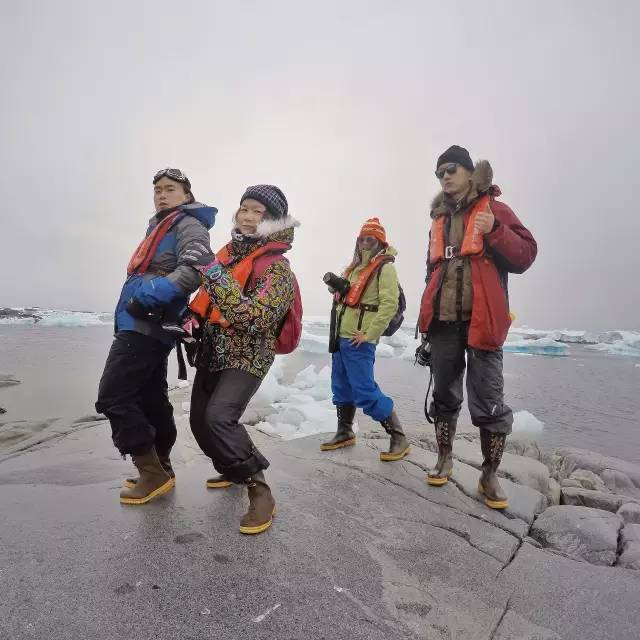
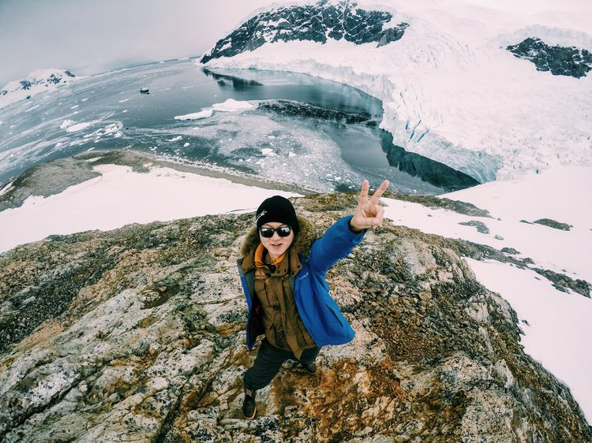

正文:
旅行真的能改变人生吗？
这也是我一直在想的问题，看到楼上好多的童鞋答的都如此之好，我也忍不住换个方式补充两句。
旅行真的能改变人生，至少是改变了我的。
先来一段自我介绍：
我是一个普通的上班狗，普通到每天和你一样，两点一线，对，那根线一般是地铁，偶尔打个uber或是易到。自从10年前第一次出国去玩泰国，旅行就开始一发不可收拾。
我的生活开始变的不同，然后一年之内去了三次泰国，
之后不满足于做泰国人，接着去了越南，结果发现还不如泰国，
一路又去了马来西亚、柬埔寨、印尼、新加坡、越南、尼泊尔，
之后在印度修成正果，体验了“除了这个世界，还有一个印度”这个不可思议（qi pa）的国家。

一发不可收拾的去了美国、欧洲数国、非洲两国（南非和肯尼亚），巴西。
并在旅行的第十年去了我魂牵梦萦的阿根廷和南极，算是完成了七大洲的旅行梦想。
要说改变，那是肯定的。


旅行对我的改变在于：
1、我现在的旅行遇到了无数的朋友，从全国各地到海外的一些朋友， 我们常常会互相寄送明信片，又或者我们能互相的交流旅行心得，这些朋友不需要常常见面，但我们的心却记挂着对方。
2、当你热爱旅行后，很多朋友说我讲到旅行的时候眼睛会放光，很兴奋的状态，这种状态让我有种发自内心的幸福，活了三十年，你终于能清晰的知道你自己要什么，你有什么奋斗目标。
3、大学时期非常害羞内向的我，也能变得开朗，更有聊资，现在一车上也能扯点荤笑话，也能变得像个team leader带着大家一起出去玩。现在很多的同学聚会、朋友旅行也全权由我来干了，这也萌生了我们现在的旅行定制的想法和我们现在的事业，有兴趣的可以点
TraveliD－定制你的专属旅行 看看。
4、常常写游记和微信的我，从一个默默无闻的拍照片极差的普通人，变成了在在路上有400万阅读的旅型家，虽然最后这个平台陨落，但还是给了我很多的自信，在知乎上发表的几篇回答也上过好几个热门，有的时候你的潜力跟磨刀是一回事，你永远不会知道哪天你就便成了利刃，发觉了原来自己的照片变成了摄影作品，突然拥有了很多粉丝。你需要的就是不断的尝试和磨练。
5、由于常常摄影并上到旅行平台热门，我这边也在旅游圈子变得有时能有一些企业赞助，旅行的时候服装、墨镜等等也能给到一些收入，加上一些平台的热门奖励费用，旅行也能变得赚点小钱了，当然这个完全是意料之外的。
永远也忘不了在路上拿到的第一笔热门游记奖励，500元的积分，让我兴奋了好久，之后变得更努力，更愿意尝试不同的摄影方式，不同的写作风格。

－－－－－－－－－－－－－－－－简陋的分割线－－－－－－－－－－－－－－
聊完自己，再聊聊怎么帮到你。其实决定出行的三个必要条件：时间、金钱和勇气，缺一不可。首先说说时间很多人说自己请不出假，没时间外出，家里的至亲拖累。
其实很多人没有你说的那么惨。
大部分时候叫完没时间的惨，然后就周末在家葛优躺、玩游戏、看剧、看直播，顺便说个夏天太热，冬天养膘的好借口。
我利用了我几乎所有的长假，假装浪迹天涯。
小长假和周末，可能就去个3、5天的地方，厦门、丽江、长白山、三亚，甚至菲律宾、越南、泰国等东南亚国家都可以这么走着；
国庆和十一两个大长假，那就走远点呗，北欧看极光、肯尼亚看动物、阿根廷和南极我都是那个时间去的。
其实普通人和常旅行的人区别最大的也就是行动力了。

再说说金钱穷可搭乘廉航，住青年旅舍，几千块也可以玩得极好，富可乘商务舱、住奢华酒店，那也算体验不同生活，享受尊贵待遇。
谁不都是从穷B的日子过来，我还记得我以前为了省费用，住在吉隆坡50元一晚的青旅，大叔看我到的晚，还专门的给了我2片面包吐司给我吃，怕我饿着。
还有一次转机去丽贝岛，坐的亚航，到当地机场已经半夜1点多，所以将就着在机场的板凳上睡了3、4小时，直接就checkin 去下一程了。
所以那些看着我现在光鲜的人，我只想说，谁没苦过～
所以别拿没钱当借口。

最后说说勇气这其实才是整个行程中最重要的部分，只要你决定了做一件事情，你就会发现好像所有人都会帮你。
老板会批你的假条
机票也偶尔有促销
再比如酒店也送给你了
最近刚捡到了意大利的三晚希尔顿酒店。。。真的很不可思议（关于这件事的细节等我去完在我的微信号：陶陶游世界 中分享给大家这个奇遇）

不管你准备好没，只要你有勇气，你就能真正踏出这一步。让天时地利人和都来一起帮助你吧！

微信号：陶陶游世界，跟你一起分享旅行的那些事儿～